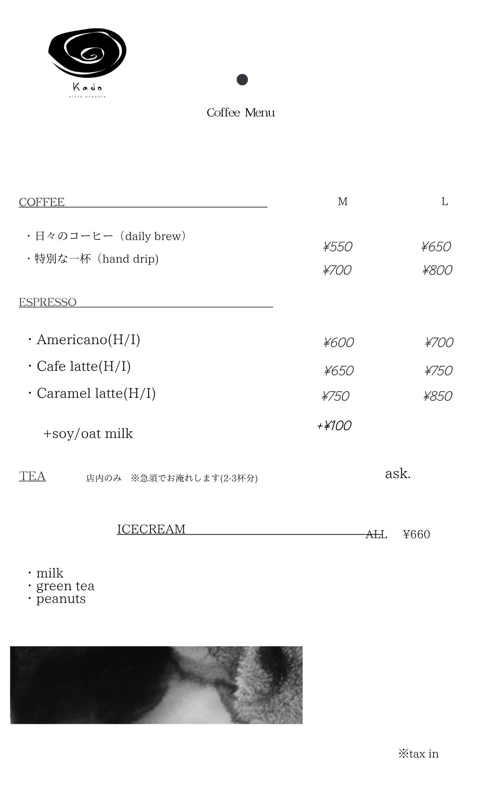

喫茶kado
まちの一角に灯る、小さな喫茶店。自家焙煎のコーヒーと、毎朝焼き上げる手作りの焼き菓子。窓の外に阿佐ヶ谷の景色を眺めながら、ゆったりとした時間を過ごす場所です。カウンター越しに、マスターとの何気ない会話も。
Hours
11:00 — 18:00
※ 2026年7月以降は 8:00 — 18:00 を予定
※ 2026年7月以降は 8:00 — 18:00 を予定
Closed
水曜日
Seats
カウンター 6席 / テーブル 12席
Wi-Fi
あり（無料）
Menu

Follow